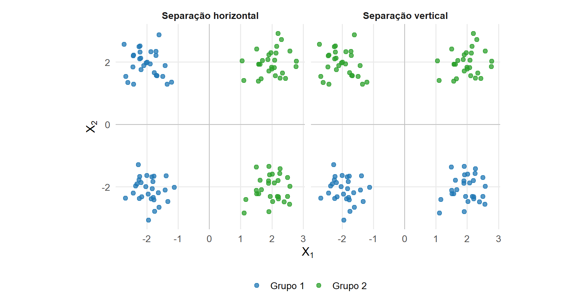
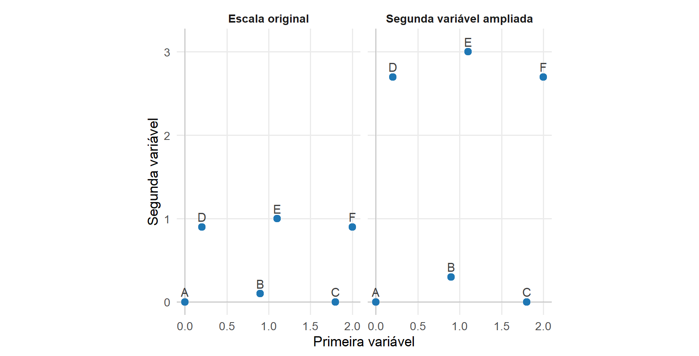
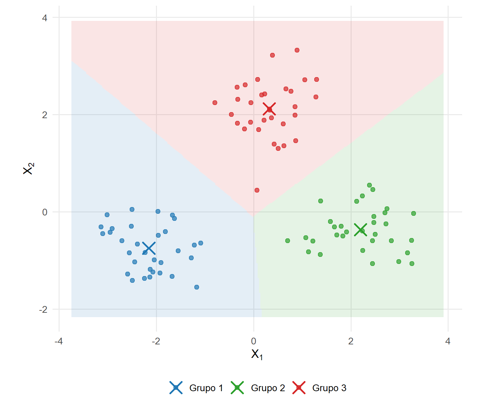
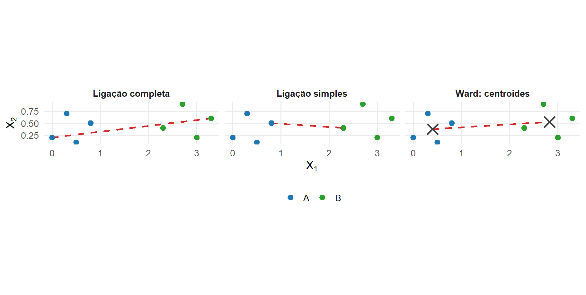
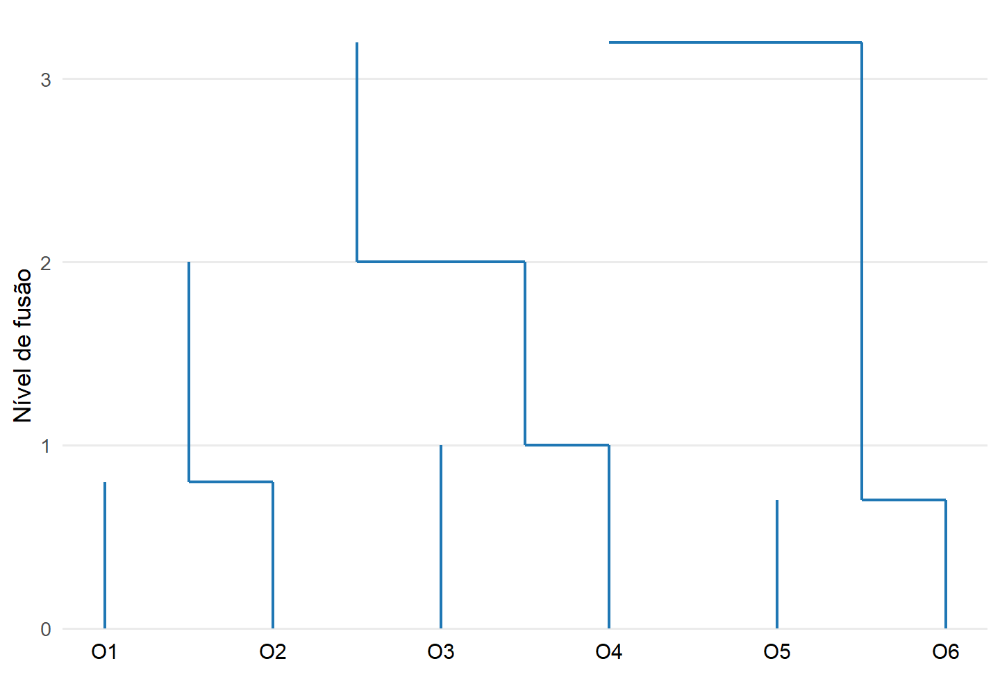

16 Formulação da Análise de Agrupamentos
A Análise de Agrupamentos organiza objetos em grupos a partir de uma representação dos dados, de uma medida de proximidade e de um critério que define a organização procurada (Everitt et al., 2011).
Sua formulação reutiliza a matriz de dados de Definição 1.6, a distância euclidiana de Definição 1.13, as geometrias induzidas de Definição 3.17 e a decomposição da dispersão entre e dentro de grupos estabelecida em Proposição 8.10. Esses objetos serão combinados para formular partições, critérios de homogeneidade e estruturas hierárquicas.
Os elementos que definem o problema são organizados na Tabela 16.1.
| Elemento | Objeto | Papel na análise |
|---|---|---|
| Representação dos objetos | matriz de dados \(\mathbf X\) ou matriz de dissimilaridades \(\boldsymbol{\Delta}\) | determina a informação disponível para comparar os objetos |
| Proximidade | distância, dissimilaridade ou similaridade | estabelece o significado de objetos próximos |
| Organização | partição \(\mathcal P\) ou estrutura hierárquica | representa os grupos construídos |
| Critério | função de perda, dispersão ou ligação | permite comparar diferentes organizações |
| Solução | grupos de objetos | resulta da otimização ou da regra de construção adotada |
A mesma coleção de observações pode produzir agrupamentos diferentes quando um desses elementos é alterado. Por isso, a Análise de Agrupamentos não possui uma definição universal de grupo independente da representação, da proximidade e do critério utilizado.
16.1 O problema de formação de grupos
Considere \(n\) objetos representados pelas linhas da matriz de dados
\[ \mathbf X = \begin{bmatrix} \mathbf x_1^\top\\ \vdots\\ \mathbf x_n^\top \end{bmatrix} \in \mathbb R^{n\times p}, \]
conforme Definição 1.6.
Os grupos não são conhecidos previamente. O objetivo é construir uma organização dos índices das observações de modo que objetos pertencentes ao mesmo grupo apresentem maior proximidade segundo o critério adotado, enquanto objetos atribuídos a grupos diferentes apresentem maior separação.
Essa formulação distingue a Análise de Agrupamentos da Análise Discriminante, que utilizará grupos previamente conhecidos. Aqui, a própria organização dos objetos faz parte da solução.
A Figura 16.1 mostra uma mesma configuração bidimensional organizada de duas formas. A figura ilustra que os pontos observados, isoladamente, não determinam qual partição deve ser escolhida.
As duas organizações mantêm os mesmos pontos e alteram somente a regra utilizada para reuni-los. A figura representa uma característica da técnica: a estrutura de grupos deve ser interpretada em relação ao critério que a produziu.
16.2 Representação dos objetos e proximidade
A matriz de dados não é a única forma de entrada da Análise de Agrupamentos. Quando as coordenadas dos objetos estão disponíveis, a proximidade pode ser calculada a partir das linhas de \(\mathbf X\). Quando as relações entre os objetos já são fornecidas diretamente, a análise pode partir de uma matriz de dissimilaridades.
A distância euclidiana já foi definida em Definição 1.13. Para duas observações \(\mathbf x_i\) e \(\mathbf x_j\), utilizaremos diretamente
\[ d_{ij} = \left\| \mathbf x_i-\mathbf x_j \right\|. \]
Não é necessário reconstruir suas propriedades métricas neste capítulo. O resultado será aplicado para definir a geometria de métodos como as \(K\)-médias e o método de Ward.
O Módulo 1 também estabeleceu em Definição 3.17 que uma matriz positiva definida pode modificar a geometria utilizada para medir comprimentos e distâncias. Assim, diferentes escolhas de métrica podem atribuir diferentes proximidades ao mesmo conjunto de observações. A distância de Mahalanobis constitui uma aplicação estatística dessa estrutura e já foi definida em Definição 8.9.
A Análise de Agrupamentos também pode receber como entrada uma matriz
\[ \boldsymbol{\Delta} = \left( \delta_{ij} \right) \in \mathbb R^{n\times n}, \]
na qual \(\delta_{ij}\) representa a dissimilaridade entre os objetos \(i\) e \(j\).
16.3 Dissimilaridades entre objetos
Definição 16.1 (Dissimilaridade) Seja
\[ \mathcal I = \{1,\ldots,n\} \]
um conjunto de objetos. Uma dissimilaridade é uma função
\[ \delta: \mathcal I\times\mathcal I \longrightarrow [0,\infty), \]
na qual valores maiores representam menor proximidade entre os objetos.
Neste capítulo, serão consideradas dissimilaridades que satisfazem
\[ \delta(i,i)=0, \qquad i\in\mathcal I, \]
e
\[ \delta(i,j) = \delta(j,i), \qquad i,j\in\mathcal I. \]
Não será exigido que
\[ \delta(i,j)>0 \qquad \text{para} \qquad i\neq j, \]
nem que seja satisfeita a desigualdade triangular.
A matriz associada a \(\delta\) é
\[ \boldsymbol{\Delta} = \left( \delta_{ij} \right), \qquad \delta_{ij} = \delta(i,j). \]
Assim, uma distância métrica pode ser utilizada como dissimilaridade, mas uma dissimilaridade não precisa satisfazer todas as propriedades exigidas de uma distância métrica (Everitt et al., 2011).
De forma correspondente, uma similaridade atribui valores maiores a objetos considerados mais semelhantes. A transformação entre similaridade e dissimilaridade depende da medida adotada e não constitui uma operação universal.
A distinção entre matriz de atributos e matriz de dissimilaridades é sintetizada na Tabela 16.2.
| Representação | Informação disponível | Consequência para a formulação |
|---|---|---|
| \(\mathbf X\in\mathbb R^{n\times p}\) | valores das \(p\) variáveis para cada objeto | a proximidade é construída a partir das coordenadas |
| \(\boldsymbol{\Delta}\in\mathbb R^{n\times n}\) | dissimilaridades entre pares de objetos | o agrupamento pode ser formulado diretamente sobre as relações entre objetos |
A escolha entre essas representações também delimita os métodos disponíveis. O critério das \(K\)-médias utiliza explicitamente centroides no espaço das variáveis e requer as coordenadas das observações. Métodos hierárquicos podem ser formulados diretamente a partir de uma matriz de dissimilaridades, desde que a regra de ligação seja compatível com a informação disponível.
A presença de uma medida de dissimilaridade não significa que ela possa substituir livremente a distância euclidiana quadrática na formulação das \(K\)-médias. O centroide é o representante ótimo de um grupo porque a média minimiza a soma das distâncias euclidianas quadráticas às observações. Ao modificar essa função de perda, podem mudar o representante ótimo do grupo, a função objetivo e a própria definição do método. Por isso, procedimentos construídos a partir de outras dissimilaridades devem ser identificados pela formulação que efetivamente utilizam.
16.3.1 Efeito da escala
A dependência das distâncias em relação à escala já foi discutida no Módulo 1, e a padronização das variáveis foi formalizada no Módulo 2. A matriz de dados padronizados observada está dada em Equação 8.69. Neste capítulo, esses resultados têm uma consequência específica: modificar a escala modifica as proximidades utilizadas para construir os grupos.
A Figura 16.2 mostra essa consequência para uma configuração bidimensional. A figura não redefine a padronização; ela mostra seu efeito sobre o problema de agrupamento.

A ampliação da segunda coordenada aumenta sua contribuição para as distâncias. Um método baseado nessas distâncias passa a comparar os mesmos objetos segundo outra geometria.
A padronização deve ser entendida da mesma forma. Ela não constitui uma exigência geral da Análise de Agrupamentos. Sua utilização altera a contribuição relativa das variáveis e, portanto, altera o problema geométrico resolvido pelo método.
16.3.2 Aprofundamento: dados mistos e dissimilaridade de Gower
A formulação das \(K\)-médias desenvolvida neste capítulo utiliza variáveis quantitativas representadas em um espaço euclidiano. Quando os objetos são descritos simultaneamente por variáveis quantitativas, ordinais e nominais, conforme a distinção apresentada na Seção 1.2, a comparação entre observações exige uma representação que respeite a natureza de cada atributo.
Uma possibilidade é a dissimilaridade proposta por Gower (Gower, 1966). Para dois objetos \(i\) e \(h\), sua forma geral pode ser escrita como
\[ d_G(i,h) = \frac{ \sum_{j=1}^{p} w_{ijh}\,d_{ijh} }{ \sum_{j=1}^{p} w_{ijh} }, \tag{16.1}\]
em que \(d_{ijh}\) representa uma dissimilaridade parcial entre os objetos na variável \(j\) e \(w_{ijh}\) indica se essa comparação participa do cálculo.
A construção de \(d_{ijh}\) depende do tipo de variável. Para uma variável quantitativa, uma forma usual é dividir a diferença absoluta pela amplitude observada,
\[ d_{ijh} = \frac{ |x_{ij}-x_{hj}| }{ R_j }, \]
quando \(R_j>0\). Para uma variável nominal, a dissimilaridade parcial pode assumir valor \(0\) para categorias iguais e \(1\) para categorias diferentes. Variáveis ordinais requerem uma representação compatível com sua ordenação antes da comparação.
A combinação dessas contribuições produz uma medida comum para atributos de naturezas distintas. Essa possibilidade não transforma a formulação clássica das \(K\)-médias em um método baseado em distância de Gower. O critério das \(K\)-médias continua definido pela minimização de distâncias euclidianas quadráticas em torno de centroides.
Procedimentos destinados a dados mistos podem utilizar outros representantes e outras funções objetivo. A família dos métodos de \(K\)-prototypes, por exemplo, combina critérios apropriados às partes quantitativa e categórica da representação. O representante de um grupo deixa de ser descrito exclusivamente pelo vetor de médias utilizado nas \(K\)-médias.
Na interpretação computacional, uma opção denominada “Gower” pode corresponder à mudança do procedimento de agrupamento, e não à simples substituição da distância dentro das \(K\)-médias. A função objetivo efetivamente utilizada deve ser identificada antes de interpretar o resultado como uma extensão de um método conhecido.
16.4 Partições
Uma das formas mais comuns de representar um agrupamento é por meio de uma partição rígida do conjunto de objetos.
Seja
\[ \mathcal I = \{1,\ldots,n\} \]
o conjunto dos índices das observações.
Definição 16.2 (Partição em grupos) Uma partição em \(K\) grupos é uma coleção
\[ \mathcal P = \left\{ C_1,\ldots,C_K \right\} \]
de subconjuntos não vazios de \(\mathcal I\) que satisfaz
\[ C_k \cap C_{\ell} = \varnothing, \qquad k\neq\ell, \]
e
\[ \bigcup_{k=1}^{K} C_k = \mathcal I. \]
As duas condições estabelecem que:
- um objeto não pertence simultaneamente a dois grupos distintos;
- todos os objetos são atribuídos a algum grupo.
O número de elementos do grupo \(C_k\) será denotado por
\[ n_k = |C_k|, \]
com
\[ \sum_{k=1}^{K} n_k = n. \]
A partição é um objeto combinatório. Ela informa quais observações pertencem ao mesmo grupo, mas não determina sozinha o critério utilizado para obtê-la.
Uma representação equivalente pode ser construída por indicadores de pertinência,
\[ u_{ik} = \begin{cases} 1, & i\in C_k, \\[4pt] 0, & i\notin C_k. \end{cases} \]
Para uma partição rígida,
\[ \sum_{k=1}^{K} u_{ik} = 1, \qquad i=1,\ldots,n. \tag{16.2}\]
16.4.1 Outras formas de pertinência
A partição rígida não é a única forma de representar a associação entre objetos e grupos. Métodos difusos podem atribuir graus de pertencimento a diferentes grupos, enquanto formulações probabilísticas podem associar probabilidades de pertinência às observações.
Essas representações correspondem a definições distintas de grupo. O desenvolvimento principal deste capítulo utilizará partições rígidas, pois elas fornecem a estrutura empregada nas \(K\)-médias e nos métodos hierárquicos. A formulação probabilística será retomada posteriormente de forma breve.
16.5 Homogeneidade interna e separação
Uma partição só se torna uma solução de agrupamento depois que se estabelece um critério para comparar diferentes partições.
Considere
\[ \mathcal P = \{C_1,\ldots,C_K\}. \]
Um critério baseado em homogeneidade interna deve assumir valores melhores quando objetos pertencentes ao mesmo grupo apresentam pequena dispersão segundo a geometria escolhida.
Um critério baseado em separação deve favorecer grupos suficientemente distintos entre si.
Essas duas propriedades são relacionadas, mas não são equivalentes em qualquer método. A forma exata de medi-las depende da definição matemática de grupo adotada.
Para agrupamentos representados por centroides e distância euclidiana quadrática, a homogeneidade interna pode ser expressa por somas de quadrados. Essa escolha conduz ao critério das \(K\)-médias e permite utilizar diretamente a decomposição da dispersão estabelecida no Módulo 2.
A caracterização da média como centroide e como minimizadora da soma das distâncias euclidianas quadráticas já foi estabelecida em Proposição 10.5. Essa propriedade será aplicada a cada grupo da partição.
16.6 Agrupamento por centroides
Uma partição pode ser representada geometricamente por um ponto que resume cada grupo. Para
\[ \mathcal P = \left\{ C_1,\ldots,C_K \right\}, \]
com
\[ n_k = |C_k|, \]
o centroide do grupo \(C_k\) será denotado por
\[ \mathbf c_k = \frac{1}{n_k} \sum_{i\in C_k} \mathbf x_i. \tag{16.3}\]
A notação \(\mathbf c_k\) distingue o centro calculado a partir das observações de um vetor de médias populacional \(\boldsymbol{\mu}_k\), que será utilizado posteriormente em técnicas formuladas a partir de populações ou grupos previamente definidos.
No agrupamento por centroides, a proximidade entre uma observação e um grupo é determinada por sua distância ao centro correspondente. Essa representação conduz naturalmente a critérios baseados na dispersão das observações em torno dos centroides.
16.6.1 Dispersão dentro e entre grupos
A decomposição da dispersão para grupos já foi estabelecida no Módulo 2. A matriz de dispersão intragrupos foi definida em Definição 8.14, a matriz entre grupos em Definição 8.15, e Proposição 8.10 demonstrou que
\[ \mathbf T = \mathbf T_{\mathrm{intra}} + \mathbf T_{\mathrm{entre}}. \]
Naquele resultado, os grupos eram considerados conhecidos. Na Análise de Agrupamentos, a mesma decomposição adquire outra função: a partição passa a ser desconhecida e deve ser construída.
Para uma partição
\[ \mathcal P = \left\{ C_1,\ldots,C_K \right\}, \]
a matriz intragrupos pode ser escrita, utilizando os centroides de Equação 16.3, como
\[ \mathbf T_{\mathrm{intra}} \left( \mathcal P \right) = \sum_{k=1}^{K} \sum_{i\in C_k} \left( \mathbf x_i-\mathbf c_k \right) \left( \mathbf x_i-\mathbf c_k \right)^\top. \tag{16.4}\]
Tomando o traço,
\[ \begin{aligned} \operatorname{tr} \left[ \mathbf T_{\mathrm{intra}} \left( \mathcal P \right) \right] &= \sum_{k=1}^{K} \sum_{i\in C_k} \operatorname{tr} \left[ \left( \mathbf x_i-\mathbf c_k \right) \left( \mathbf x_i-\mathbf c_k \right)^\top \right] \\ &= \sum_{k=1}^{K} \sum_{i\in C_k} \left\| \mathbf x_i-\mathbf c_k \right\|^2. \end{aligned} \tag{16.5}\]
A expressão em Equação 16.5 transforma a matriz de dispersão do Módulo 2 em um critério escalar para comparar partições.
Quanto menores forem as distâncias quadráticas das observações aos centroides de seus grupos, menor será
\[ \operatorname{tr} \left( \mathbf T_{\mathrm{intra}} \right). \]
Como a matriz total \(\mathbf T\) não depende da partição e
\[ \mathbf T = \mathbf T_{\mathrm{intra}} + \mathbf T_{\mathrm{entre}}, \]
segue também que
\[ \operatorname{tr} \left( \mathbf T \right) = \operatorname{tr} \left( \mathbf T_{\mathrm{intra}} \right) + \operatorname{tr} \left( \mathbf T_{\mathrm{entre}} \right). \tag{16.6}\]
Para \(K\) fixado, reduzir a dispersão intragrupos aumenta a parcela da dispersão atribuída aos centroides dos grupos em relação ao centroide global. Essa relação fornece a formulação utilizada pelas \(K\)-médias.
16.6.2 Formulação das \(K\)-médias
O método das \(K\)-médias define os grupos pela minimização da soma das distâncias euclidianas quadráticas das observações aos centroides correspondentes (MacQueen, 1967).
Definição 16.3 (Critério das \(K\)-médias) Para um número fixado de grupos \(K\), com
\[ 1 \leq K \leq n, \]
considere os indicadores de pertinência \(u_{ik}\) e os centros
\[ \mathbf c_1,\ldots,\mathbf c_K \in \mathbb R^p. \]
O critério conjunto das \(K\)-médias é
\[ Q_K \left( \{u_{ik}\}, \mathbf c_1,\ldots,\mathbf c_K \right) = \sum_{i=1}^{n} \sum_{k=1}^{K} u_{ik} \left\| \mathbf x_i-\mathbf c_k \right\|^2, \tag{16.7}\]
sujeito a
\[ u_{ik} \in \{0,1\}, \]
\[ \sum_{k=1}^{K} u_{ik} = 1, \qquad i=1,\ldots,n, \]
e
\[ \sum_{i=1}^{n} u_{ik} \geq 1, \qquad k=1,\ldots,K. \]
As duas primeiras restrições estabelecem uma atribuição rígida: \(u_{ik}\) é binário e cada observação pertence a exatamente um dos \(K\) grupos. A terceira restrição garante que todos os \(K\) grupos sejam não vazios.
Para uma partição
\[ \mathcal P = \{C_1,\ldots,C_K\}, \]
o critério após a minimização em relação aos centros é
\[ J_K \left( \mathcal P \right) = \sum_{k=1}^{K} \sum_{i\in C_k} \left\| \mathbf x_i-\mathbf c_k \right\|^2, \tag{16.8}\]
em que
\[ \mathbf c_k = \frac{1}{n_k} \sum_{i\in C_k} \mathbf x_i. \]
A propriedade de que esses centroides minimizam o critério para uma partição fixada decorre diretamente de Proposição 10.5.
A solução global pode ser representada por
\[ \mathcal P^{*} \in \operatorname*{arg\,min}_{\mathcal P} J_K \left( \mathcal P \right), \tag{16.9}\]
em que a minimização é realizada sobre as partições admissíveis de \(\{1,\ldots,n\}\) em \(K\) grupos não vazios.
Pela relação em Equação 16.5,
\[ J_K \left( \mathcal P \right) = \operatorname{tr} \left[ \mathbf T_{\mathrm{intra}} \left( \mathcal P \right) \right]. \tag{16.10}\]
Assim, as \(K\)-médias utilizam diretamente a estrutura de dispersão introduzida no Módulo 2. A diferença está no papel dos grupos: naquele módulo, a partição era dada; aqui, ela é parte do problema de otimização.
A partir de Equação 16.6,
\[ J_K \left( \mathcal P \right) = \operatorname{tr} \left( \mathbf T \right) - \operatorname{tr} \left[ \mathbf T_{\mathrm{entre}} \left( \mathcal P \right) \right]. \]
Como
\[ \operatorname{tr} \left( \mathbf T \right) \]
é constante para a mesma matriz de dados, minimizar o critério das \(K\)-médias equivale a maximizar
\[ \operatorname{tr} \left[ \mathbf T_{\mathrm{entre}} \left( \mathcal P \right) \right]. \tag{16.11}\]
Como a dispersão entre grupos pode ser escrita em função dos centroides e de seus tamanhos,
\[ \mathbf T_{\mathrm{entre}} = \sum_{k=1}^{K} n_k \left( \mathbf c_k-\bar{\mathbf x} \right) \left( \mathbf c_k-\bar{\mathbf x} \right)^\top, \]
tem-se
\[ \operatorname{tr} \left( \mathbf T_{\mathrm{entre}} \right) = \sum_{k=1}^{K} n_k \left\| \mathbf c_k-\bar{\mathbf x} \right\|^2. \tag{16.12}\]
As duas formulações descrevem, portanto, o mesmo problema para \(K\) fixado: minimizar a dispersão quadrática das observações em torno dos centroides equivale a maximizar a dispersão ponderada dos centroides dos grupos em torno do centroide global.
16.6.3 O centroide como minimizador
A propriedade que justifica a média como representante de cada grupo já foi estabelecida em Proposição 10.5. Aplicando Equação 10.52 às observações de um grupo não vazio \(C_k\), seu centroide
\[ \mathbf c_k = \frac{1}{n_k} \sum_{i\in C_k} \mathbf x_i \]
é o único ponto que minimiza
\[ \sum_{i\in C_k} \left\| \mathbf x_i-\mathbf c \right\|^2 \]
em relação a \(\mathbf c\in\mathbb R^p\).
O uso da média como representante do grupo decorre, portanto, da distância euclidiana quadrática utilizada pelo critério das \(K\)-médias. Outras funções de perda podem produzir representantes diferentes.
16.6.4 Partição para centroides fixados
Considere os centros
\[ \mathbf c_1,\ldots,\mathbf c_K \]
como fixados. Desconsiderando momentaneamente a restrição de não vacuidade dos grupos, a contribuição de uma observação \(\mathbf x_i\) ao critério é minimizada atribuindo-a a um centro pertencente a
\[ \operatorname*{arg\,min}_{1\leq k\leq K} \left\| \mathbf x_i-\mathbf c_k \right\|^2. \tag{16.13}\]
Assim, cada observação é associada a um centroide de menor distância. Em caso de empate, mais de uma atribuição pode produzir a mesma contribuição mínima.
Quando essa regra produz \(K\) grupos não vazios, ela também minimiza o critério entre as atribuições admissíveis para os centroides fixados. Se algum centro não receber observações, a restrição de não vacuidade impede que o subproblema restrito seja resolvido apenas pela minimização ponto a ponto. O tratamento computacional desses casos pertence à etapa de implementação e não será desenvolvido neste capítulo.
Essa propriedade, combinada ao fato de que o centroide minimiza a soma de quadrados para uma partição fixada, caracteriza a estrutura de otimização associada ao critério das \(K\)-médias.
16.6.5 Geometria das regiões de alocação
Para centroides fixados, a regra em Equação 16.13 divide o espaço em regiões formadas pelos pontos mais próximos de cada centroide.
Para dois centroides \(\mathbf c_k\) e \(\mathbf c_\ell\), a fronteira entre suas regiões satisfaz
\[ \left\| \mathbf x-\mathbf c_k \right\|^2 = \left\| \mathbf x-\mathbf c_\ell \right\|^2. \]
Expandindo os produtos internos e cancelando os termos comuns, obtém-se
\[ 2 \left( \mathbf c_\ell-\mathbf c_k \right)^\top \mathbf x = \mathbf c_\ell^\top\mathbf c_\ell - \mathbf c_k^\top\mathbf c_k. \tag{16.14}\]
A fronteira é, portanto, um hiperplano.
As regiões definidas simultaneamente por todos os centroides formam uma partição de Voronoi do espaço. Uma região de Voronoi pode não conter nenhuma das observações disponíveis para uma determinada configuração de centros; isso não altera sua definição geométrica.
Essa geometria explica por que as \(K\)-médias favorecem grupos associados a regiões convexas em torno de centros.
A Figura 16.3 representa uma solução com três centroides. As regiões de fundo indicam qual centroide é o mais próximo em cada posição do plano, enquanto os símbolos maiores identificam os centroides da solução.

A figura mostra duas propriedades da formulação. Cada grupo é representado por um centroide, e a alocação é determinada pela geometria euclidiana relativa a esses centros. A forma dos grupos obtidos pelo critério está vinculada a essa representação.
Exemplo 16.1 (Comparação de duas partições) Considere quatro observações unidimensionais,
\[ x_1=1, \qquad x_2=2, \qquad x_3=8, \qquad x_4=9, \]
e duas partições candidatas com
\[ K=2. \]
Na primeira,
\[ \mathcal P_1 = \left\{ \{1,2\}, \{3,4\} \right\}. \]
Os centroides são
\[ c_1 = 1{,}5 \]
e
\[ c_2 = 8{,}5. \]
Logo,
\[ \begin{aligned} J_2 \left( \mathcal P_1 \right) &= (1-1{,}5)^2 + (2-1{,}5)^2 \\ &\quad+ (8-8{,}5)^2 + (9-8{,}5)^2 \\ &= 1. \end{aligned} \]
Considere agora
\[ \mathcal P_2 = \left\{ \{1,3\}, \{2,4\} \right\}. \]
Os centroides são
\[ c_1 = 4{,}5 \]
e
\[ c_2 = 5{,}5. \]
Nesse caso,
\[ \begin{aligned} J_2 \left( \mathcal P_2 \right) &= (1-4{,}5)^2 + (8-4{,}5)^2 \\ &\quad+ (2-5{,}5)^2 + (9-5{,}5)^2 \\ &= 49. \end{aligned} \]
O critério atribui valor menor à primeira partição porque as observações estão muito mais concentradas em torno dos respectivos centroides.
O exemplo também mostra que o método não procura apenas separar pontos distantes. A solução é definida pela soma global das dispersões quadráticas dentro dos grupos.
16.6.6 Existência e não unicidade da solução
Para uma matriz de dados finita e um valor fixado de
\[ 1 \leq K \leq n, \]
o conjunto de partições das \(n\) observações em \(K\) grupos não vazios é finito. Como
\[ J_K \left( \mathcal P \right) \geq 0, \]
existe pelo menos uma partição que atinge o menor valor do critério em Equação 16.8.
A existência do mínimo não implica unicidade. Diferentes partições podem produzir o mesmo valor mínimo, e permutações dos rótulos \(1,\ldots,K\) representam a mesma organização dos objetos.
O problema completo combina a atribuição das observações aos grupos e a determinação dos centroides. Para uma partição fixada, os centroides são determinados pela propriedade da média amostral; para centroides fixados, utiliza-se a regra em Equação 16.13. Essas propriedades não garantem que um procedimento iterativo alcance o mínimo global do problema.
O critério matemático que define as \(K\)-médias deve ser distinguido do algoritmo utilizado para procurar uma solução. Diferentes procedimentos iterativos e diferentes configurações iniciais podem conduzir a mínimos locais distintos do mesmo critério. Repetir o ajuste a partir de diferentes configurações iniciais constitui uma estratégia computacional para procurar valores menores da função objetivo, mas não modifica a definição matemática das \(K\)-médias. Os algoritmos específicos serão tratados na etapa aplicada.
O valor de \(K\) faz parte da especificação do problema das \(K\)-médias. O critério de dispersão intragrupos permite comparar partições com o mesmo número de grupos, mas não determina, por si só, qual valor de \(K\) deve ser adotado.
16.6.7 Aprofundamento: escolha do número de grupos
Para comparar soluções com diferentes valores de \(K\), denote por \(\mathcal A_K\) o conjunto das partições das \(n\) observações em exatamente \(K\) grupos não vazios e defina
\[ W_K = \min_{\mathcal P\in\mathcal A_K} J_K(\mathcal P). \tag{16.15}\]
Para \(1\leq K<n\),
\[ W_{K+1} \leq W_K, \]
pois permitir um grupo adicional amplia as possibilidades de representar as observações com menor dispersão intragrupos. No caso extremo \(K=n\), cada observação pode formar um grupo unitário e
\[ W_n=0. \]
A redução de \(W_K\) à medida que \(K\) aumenta mostra que o menor valor da função objetivo não pode, isoladamente, determinar o número de grupos. A escolha exige avaliar se o ganho obtido ao aumentar \(K\) justifica a maior complexidade da partição.
O gráfico do cotovelo (elbow plot) examina a sequência de valores de dispersão intragrupos para diferentes valores de \(K\). A interpretação procura uma região em que reduções adicionais de \(W_K\) passam a ser relativamente pequenas. Essa mudança de comportamento pode fornecer uma indicação de dimensão, mas não constitui uma regra que determine um número verdadeiro de grupos.
Outro critério utiliza a silhueta, que compara a coesão de uma observação com seu próprio grupo e sua separação em relação aos demais (Kaufman; Rousseeuw, 1990). Para uma observação \(i\), seja \(a(i)\) a dissimilaridade média entre \(i\) e as demais observações de seu grupo e seja \(b(i)\) a menor dissimilaridade média entre \(i\) e as observações de qualquer outro grupo. Quando essas quantidades estão definidas, o coeficiente de silhueta é
\[ s(i) = \frac{ b(i)-a(i) }{ \max\{a(i),b(i)\} }. \tag{16.16}\]
O coeficiente satisfaz
\[ -1 \leq s(i) \leq 1. \]
Valores elevados indicam que a observação está relativamente próxima das observações de seu grupo e afastada dos grupos concorrentes. Valores próximos de zero indicam posições intermediárias, enquanto valores negativos indicam maior proximidade média com outro grupo. A média dos coeficientes fornece uma medida descritiva da coesão e da separação da partição.
A estatística gap utiliza outra referência. Para cada valor de \(K\), compara-se a dispersão intragrupos observada com a dispersão esperada em conjuntos de referência construídos sem uma estrutura de agrupamento equivalente à observada. Em forma geral,
\[ \operatorname{Gap}(K) = E^* \left[ \log W_K^* \right] - \log W_K, \tag{16.17}\]
em que \(W_K^*\) representa a dispersão intragrupos no conjunto de referência e \(E^*\) indica a média em relação ao mecanismo utilizado para gerar essa referência.
O cotovelo, a silhueta e a estatística gap fornecem informações distintas sobre uma partição. Nenhum desses critérios estabelece, isoladamente, a existência de um número verdadeiro de grupos na população. A escolha de \(K\) deve ser interpretada em conjunto com a estabilidade da solução, sua interpretação substantiva e o objetivo da análise. Os procedimentos computacionais de comparação e validação serão desenvolvidos na etapa aplicada.
16.6.8 Efeito de transformações sobre as \(K\)-médias
O critério das \(K\)-médias depende das distâncias euclidianas entre observações e centroides. Transformações que preservam essas distâncias preservam também a ordenação das partições segundo o critério.
Em particular, rotações e reflexões ortogonais preservam a geometria euclidiana por Proposição 4.10. Uma translação comum também não altera as diferenças entre observações e centroides. Uma mudança comum de escala multiplica todas as distâncias pelo mesmo fator e, portanto, não modifica a partição que minimiza o critério.
Mudanças distintas de escala entre variáveis não possuem essa propriedade. Como mostrado na Figura 16.2, elas modificam as proximidades relativas e podem alterar a solução.
A formulação por centroides caracteriza grupos pela concentração quadrática em torno de centros. Os métodos hierárquicos utilizam outra estrutura: constroem uma sequência de agrupamentos aninhados a partir de regras de proximidade entre conjuntos.
16.7 Estrutura dos métodos hierárquicos
As \(K\)-médias procuram diretamente uma partição para um número \(K\) previamente fixado de grupos. Os métodos hierárquicos produzem outro objeto: uma sequência de partições aninhadas, na qual a organização dos grupos é construída progressivamente (Everitt et al., 2011).
Os métodos hierárquicos podem ser aglomerativos ou divisivos. Nos procedimentos aglomerativos, grupos menores são sucessivamente reunidos; nos divisivos, grupos maiores são progressivamente subdivididos. O desenvolvimento deste capítulo será concentrado nos métodos aglomerativos.
A construção depende de dois elementos distintos: uma medida de dissimilaridade entre os objetos e uma regra de ligação que estende essa dissimilaridade para pares de grupos. É a regra de ligação que define matematicamente quais grupos são considerados mais próximos em cada etapa. O dendrograma registra a hierarquia produzida por essas fusões.
Em um procedimento aglomerativo, parte-se da partição formada por \(n\) grupos unitários,
\[ \mathcal P_n = \left\{ \{1\},\ldots,\{n\} \right\}, \]
e, a cada etapa, dois grupos são fundidos. Após uma fusão, obtém-se uma nova partição com um grupo a menos, até chegar a
\[ \mathcal P_1 = \left\{ \{1,\ldots,n\} \right\}. \]
As partições sucessivas são aninhadas: um grupo formado em determinada etapa permanece contido em algum grupo das etapas posteriores.
Definição 16.4 (Hierarquia de agrupamentos) Uma hierarquia aglomerativa é uma sequência de partições
\[ \mathcal P_n, \mathcal P_{n-1}, \ldots, \mathcal P_1, \]
na qual \(\mathcal P_{r-1}\) é obtida de \(\mathcal P_r\) pela fusão de exatamente dois grupos.
A construção da hierarquia exige uma regra para comparar grupos. O Módulo 1 forneceu a distância entre observações em Definição 1.13 e outras geometrias por meio de normas induzidas. No agrupamento hierárquico, essa informação deve ser estendida de pares de observações para pares de conjuntos.
Considere dois grupos não vazios
\[ A \subseteq \{1,\ldots,n\} \]
e
\[ B \subseteq \{1,\ldots,n\}. \]
Uma regra de ligação define uma dissimilaridade
\[ D(A,B) \]
entre esses grupos. Não existe uma única extensão obrigatória da dissimilaridade entre objetos para a comparação entre conjuntos. Diferentes regras utilizam informações distintas sobre os elementos de \(A\) e \(B\) e, por isso, podem produzir hierarquias diferentes mesmo quando partem da mesma matriz \(\boldsymbol{\Delta}\).
A escolha da ligação faz, portanto, parte da definição matemática do método hierárquico, e não apenas de sua implementação computacional.
16.7.1 Ligações simples, completa e média
Três regras podem ser construídas diretamente a partir das dissimilaridades entre pares de objetos.
Na ligação simples,
\[ D_{\mathrm{simples}} \left( A,B \right) = \min_{\substack{i\in A\\j\in B}} \delta_{ij}. \tag{16.18}\]
A proximidade entre os grupos é determinada pelo par mais próximo. A fusão pode, portanto, ocorrer quando existe uma conexão curta entre dois conjuntos, mesmo que outros elementos estejam relativamente afastados.
Na ligação completa,
\[ D_{\mathrm{completa}} \left( A,B \right) = \max_{\substack{i\in A\\j\in B}} \delta_{ij}. \tag{16.19}\]
A comparação é determinada pelo par mais distante. Essa definição favorece fusões nas quais todos os elementos dos dois grupos permanecem relativamente próximos.
Na ligação média,
\[ D_{\mathrm{media}} \left( A,B \right) = \frac{1}{ |A||B| } \sum_{i\in A} \sum_{j\in B} \delta_{ij}. \tag{16.20}\]
A dissimilaridade entre os grupos corresponde à média das dissimilaridades entre todos os pares formados por um elemento de \(A\) e um elemento de \(B\).
As três regras utilizam a mesma matriz de dissimilaridades, mas representam noções distintas de proximidade entre conjuntos.
A Tabela 16.3 compara as três definições de proximidade entre grupos.
| Regra de ligação | Dissimilaridade entre \(A\) e \(B\) | Estrutura privilegiada |
|---|---|---|
| simples | menor dissimilaridade entre pares | conexão entre elementos próximos |
| completa | maior dissimilaridade entre pares | controle da maior dissimilaridade entre os grupos candidatos à fusão |
| média | média das dissimilaridades entre pares | proximidade média entre os conjuntos |
A diferença entre os critérios pode ser observada mesmo com poucos objetos. Considere dois grupos
\[ A = \{1,2\} \]
e
\[ B = \{3,4\}, \]
com dissimilaridades entre seus elementos dadas por
\[ \delta_{13}=2, \qquad \delta_{14}=8, \qquad \delta_{23}=3, \qquad \delta_{24}=7. \]
Então,
\[ D_{\mathrm{simples}}(A,B) = 2, \]
\[ D_{\mathrm{completa}}(A,B) = 8 \]
e
\[ D_{\mathrm{media}}(A,B) = \frac{ 2+8+3+7 }{4} = 5. \]
Não há contradição entre os três resultados. Cada valor responde a uma definição diferente da proximidade entre grupos.
16.7.2 Empates e não unicidade da hierarquia
Em uma etapa do procedimento aglomerativo, mais de um par de grupos pode apresentar o mesmo menor valor do critério de ligação. Nesse caso, o critério não determina sozinho qual fusão deve ocorrer primeiro, e diferentes regras de desempate podem produzir sequências posteriores distintas.
Essa não unicidade deve ser distinguida da liberdade de reordenar graficamente as folhas de um dendrograma sem modificar a hierarquia representada. A primeira pertence à construção da solução; a segunda é apenas uma propriedade de sua representação gráfica.
16.7.3 Método de Ward e dispersão intragrupos
O método de Ward utiliza uma construção distinta das ligações simples, completa e média. Na formulação desenvolvida aqui, os objetos possuem coordenadas em um espaço euclidiano e a decisão de fusão é baseada no aumento da dispersão quadrática intragrupos (Ward, 1963).
Essa interpretação utiliza a matriz \(\mathbf T_{\mathrm{intra}}\) definida em Definição 8.14 e a decomposição estabelecida em Proposição 8.10.
Considere dois grupos não vazios \(A\) e \(B\), com tamanhos
\[ n_A=|A|, \qquad n_B=|B|, \]
e centroides \(\mathbf c_A\) e \(\mathbf c_B\). Após a fusão,
\[ C=A\cup B, \]
o centroide do grupo resultante é
\[ \mathbf c_C = \frac{ n_A\mathbf c_A+n_B\mathbf c_B }{ n_A+n_B }. \tag{16.21}\]
Defina
\[ J(A) = \sum_{i\in A} \left\| \mathbf x_i-\mathbf c_A \right\|^2. \]
O aumento da dispersão intragrupos produzido pela fusão é
\[ \Delta_{\mathrm{Ward}}(A,B) = J(A\cup B)-J(A)-J(B). \tag{16.22}\]
Aplicando Equação 10.52 separadamente aos grupos \(A\) e \(B\), em torno do novo centroide \(\mathbf c_C\), obtém-se
\[ \Delta_{\mathrm{Ward}}(A,B) = n_A \left\| \mathbf c_A-\mathbf c_C \right\|^2 + n_B \left\| \mathbf c_B-\mathbf c_C \right\|^2. \]
Substituindo Equação 16.21 nessa expressão,
\[ \Delta_{\mathrm{Ward}}(A,B) = \frac{ n_A n_B }{ n_A+n_B } \left\| \mathbf c_A-\mathbf c_B \right\|^2. \tag{16.23}\]
Proposição 16.1 (Incremento de dispersão no método de Ward) A fusão de dois grupos \(A\) e \(B\) aumenta a soma de quadrados intragrupos em
\[ \Delta_{\mathrm{Ward}}(A,B) = \frac{ n_A n_B }{ n_A+n_B } \left\| \mathbf c_A-\mathbf c_B \right\|^2. \]
O método de Ward seleciona, em cada etapa, uma fusão que produz o menor aumento em
\[ \operatorname{tr} \left( \mathbf T_{\mathrm{intra}} \right). \]
A expressão em Equação 16.23 combina a separação entre os centroides com os tamanhos dos grupos.
Ward e \(K\)-médias utilizam a mesma noção de dispersão quadrática intragrupos, mas a utilizam em problemas diferentes. Nas \(K\)-médias, para um valor fixado de \(K\), procura-se uma partição que minimize globalmente
\[ \operatorname{tr} \left( \mathbf T_{\mathrm{intra}} \right). \]
No método de Ward, cada etapa seleciona apenas a fusão que produz o menor aumento dessa quantidade entre as fusões disponíveis naquele momento.
Ward é, portanto, um procedimento hierárquico de decisão sucessiva. Uma partição obtida ao cortar sua hierarquia em \(K\) grupos não é, em geral, a solução global do problema das \(K\)-médias para esse mesmo valor de \(K\).
16.7.4 Aprofundamento: convenções computacionais para o método de Ward
Algumas implementações distinguem as opções Ward.D e Ward.D2. Esses nomes não representam duas denominações equivalentes para o mesmo cálculo.
A formulação desenvolvida neste capítulo utiliza diretamente o aumento da soma de quadrados intragrupos,
\[ \Delta_{\mathrm{Ward}}(A,B) = \frac{ n_A n_B }{ n_A+n_B } \left\| \mathbf c_A-\mathbf c_B \right\|^2. \]
Em implementações baseadas na convenção do hclust do R, Ward.D2 é a opção diretamente associada a essa formulação de mínima variância quando a análise parte das distâncias euclidianas. Ward.D corresponde a uma convenção histórica distinta. A interpretação dos resultados deve considerar qual dessas formulações foi utilizada.
A Figura 16.4 representa a diferença conceitual entre ligação simples, ligação completa e Ward para dois grupos.

Na ligação simples, apenas o par mais próximo determina a comparação. Na ligação completa, utiliza-se o par mais afastado. Em Ward, a distância entre centroides participa de uma expressão ponderada pelos tamanhos dos grupos e determina o aumento produzido na dispersão intragrupos.
A ligação média não aparece na figura porque utiliza simultaneamente todos os pares entre os dois grupos e não pode ser representada por um único segmento.
16.7.5 Dendrograma e níveis de fusão
A sequência produzida por um método hierárquico pode ser representada por um dendrograma.
Definição 16.5 (Dendrograma) Um dendrograma é uma representação gráfica de uma hierarquia de agrupamentos na qual as folhas representam os objetos e as alturas das junções registram os níveis associados às fusões entre grupos.
O dendrograma representa a sequência de partições aninhadas produzida pelo método. Uma partição com determinado número de grupos pode ser associada a uma etapa da hierarquia e, quando os níveis de fusão permitem essa separação, representada por um corte horizontal.
Um corte horizontal do dendrograma seleciona uma das partições contidas na hierarquia, mas não estabelece, por si só, que essa partição seja preferível às demais. O dendrograma representa a estrutura das fusões produzidas pelo método; a escolha de uma partição específica constitui uma decisão adicional.
Critérios utilizados para auxiliar essa escolha são apresentados como aprofundamento na Seção 16.6.7.
A Figura 16.5 apresenta uma hierarquia simples construída a partir de seis objetos.

O eixo vertical do dendrograma deve ser interpretado segundo o critério utilizado. Na ligação simples, por exemplo, a altura pode ser expressa pela dissimilaridade no nível em que a fusão ocorre. No método de Ward, o nível está associado ao incremento da dispersão intragrupos, podendo sua escala gráfica depender da convenção adotada na implementação.
Por isso, alturas obtidas por critérios diferentes não representam necessariamente a mesma quantidade matemática ou estatística.
16.7.6 Uma partição e uma hierarquia representam objetos diferentes
As \(K\)-médias produzem diretamente uma partição
\[ \mathcal P = \left\{ C_1,\ldots,C_K \right\}. \]
Um método hierárquico produz uma coleção ordenada de partições aninhadas.
Essa diferença modifica o tipo de informação fornecida pela técnica e é sintetizada na Tabela 16.4.
| Estrutura | Resultado principal | Critério |
|---|---|---|
| \(K\)-médias | uma partição para \(K\) fixado | minimização da dispersão quadrática intragrupos |
| ligação simples | uma hierarquia | menor dissimilaridade entre grupos |
| ligação completa | uma hierarquia | maior dissimilaridade entre grupos |
| ligação média | uma hierarquia | média das dissimilaridades entre grupos |
| Ward | uma hierarquia | menor aumento da dispersão intragrupos |
A existência de diferentes critérios mostra que “grupo” não corresponde a um único objeto matemático.
Nas \(K\)-médias, um grupo é representado por proximidade a um centroide. Na ligação simples, a formação de grupos depende da conectividade produzida por pares próximos. Na ligação completa, controla-se a maior dissimilaridade entre elementos de grupos candidatos à fusão. Na ligação média, considera-se conjuntamente o conjunto de dissimilaridades entre os dois grupos. Em Ward, a fusão é avaliada por seu efeito sobre a dispersão quadrática intragrupos.
Além disso, uma partição selecionada de uma hierarquia não é equivalente a uma solução obtida diretamente pela otimização de um critério para o mesmo número de grupos. A hierarquia conserva as fusões realizadas anteriormente e, portanto, restringe as partições que podem aparecer nas etapas posteriores.
Além dessas formulações geométricas, grupos também podem ser definidos probabilisticamente como componentes de uma distribuição. Essa possibilidade será apresentada de forma breve a seguir.
16.8 Diferentes definições matemáticas de grupo
As formulações anteriores mostram que a expressão grupo não identifica um único objeto matemático. Nas \(K\)-médias, um grupo é organizado em torno de um centroide; nos métodos hierárquicos, sua formação depende de uma regra de ligação e da sequência de fusões.
Uma formulação diferente pode ser construída por meio de um modelo probabilístico (Everitt et al., 2011). Considere uma variável categórica latente
\[ \mathsf C \in \{1,\ldots,K\}, \]
com
\[ P(\mathsf C=k) = \pi_k, \qquad \pi_k>0, \qquad \sum_{k=1}^{K}\pi_k=1. \]
Se, condicionalmente a \(\mathsf C=k\), o vetor aleatório \(\boldsymbol{\mathsf X}\) possui densidade
\[ f_k \left( \mathbf x; \boldsymbol{\theta}_k \right), \]
então, pela lei da probabilidade total,
\[ f(\mathbf x) = \sum_{k=1}^{K} \pi_k f_k \left( \mathbf x; \boldsymbol{\theta}_k \right). \tag{16.24}\]
Definição 16.6 (Modelo de mistura para agrupamento) Um modelo de mistura para agrupamento representa a distribuição das observações como uma combinação de \(K\) componentes probabilísticas,
\[ f(\mathbf x) = \sum_{k=1}^{K} \pi_k f_k \left( \mathbf x; \boldsymbol{\theta}_k \right). \]
Nessa formulação, o grupo é representado pela componente associada à variável latente categórica \(\mathsf C\). O conceito de grupo é, portanto, diferente daquele definido por proximidade a centroides ou por regras de ligação.
Para uma observação com valor \(\mathbf x\), a pertinência às componentes pode ser expressa pelas probabilidades posteriores
\[ P \left( \mathsf C=k \mid \boldsymbol{\mathsf X}=\mathbf x \right) = \frac{ \pi_k f_k \left( \mathbf x; \boldsymbol{\theta}_k \right) }{ \displaystyle \sum_{\ell=1}^{K} \pi_\ell f_\ell \left( \mathbf x; \boldsymbol{\theta}_\ell \right) }. \tag{16.25}\]
Diferentemente de uma partição rígida, na qual cada objeto pertence a um único grupo, o modelo de mistura pode associar a mesma observação a diferentes componentes com probabilidades distintas. Uma partição rígida pode ser obtida posteriormente, por exemplo, atribuindo cada observação à componente de maior probabilidade posterior.
A normalidade multivariada não é necessária para definir um modelo de mistura em geral. Ela aparece apenas quando as densidades componentes são escolhidas como normais multivariadas.
Outras classes de métodos podem definir grupos por conectividade ou por regiões de elevada concentração. Essas formulações serão apenas mencionadas neste livro; seu desenvolvimento metodológico e computacional pertence à etapa aplicada.
16.9 Dependência da solução e limites da formulação
A Análise de Agrupamentos não possui um conjunto único de pressupostos probabilísticos. As \(K\)-médias e os métodos hierárquicos desenvolvidos neste capítulo podem ser formulados geometricamente, sem hipótese de normalidade multivariada ou de um modelo probabilístico gerador. Quando um modelo de mistura é utilizado, as hipóteses das distribuições componentes passam a integrar a formulação.
A solução depende das escolhas que definem o problema. A Tabela 16.5 resume essas dependências.
| Elemento modificado | Estrutura alterada | Consequência possível |
|---|---|---|
| conjunto de variáveis | representação dos objetos | proximidades e grupos podem mudar |
| escala das variáveis | geometria do espaço | variáveis recebem pesos relativos diferentes |
| métrica ou dissimilaridade | relação de proximidade | pares considerados próximos podem mudar |
| número \(K\) | conjunto de soluções consideradas | muda o problema formulado |
| função objetivo | definição de homogeneidade | muda a estrutura procurada |
| regra de ligação | proximidade entre grupos | muda a hierarquia |
| modelo probabilístico | definição das componentes | muda a interpretação dos grupos |
Adicionar, retirar ou transformar variáveis modifica a representação dos objetos e pode alterar as relações de proximidade. Mudanças de escala e de métrica modificam a geometria utilizada para compará-los.
A forma de grupo procurada também depende do critério. As \(K\)-médias representam grupos por centroides e minimizam dispersão quadrática intragrupos. As ligações simples, completa e média utilizam diferentes definições de proximidade entre conjuntos. O método de Ward seleciona fusões segundo o aumento da dispersão intragrupos. Em modelos de mistura, os grupos correspondem a componentes de uma distribuição especificada.
A solução pode não ser única. Nas \(K\)-médias, diferentes partições podem atingir o mesmo mínimo; nos métodos hierárquicos, empates podem produzir diferentes sequências de fusões. Além disso, os rótulos atribuídos aos grupos são arbitrários.
Os pressupostos e os limites devem, portanto, ser interpretados relativamente à formulação utilizada. A representação dos objetos, a proximidade e o critério de agrupamento fazem parte da própria definição do problema.
16.10 Ausência de classes naturais automáticas
A Análise de Agrupamentos é uma técnica não supervisionada: os rótulos dos grupos não são conhecidos previamente.
Uma solução obtida por \(K\)-médias, por um método hierárquico ou por uma formulação probabilística descreve uma organização dos objetos segundo o critério adotado. Essa solução não demonstra, por si só, que existam populações distintas responsáveis pela geração das observações.
A interpretação dos grupos deve combinar a estrutura encontrada com conhecimento sobre o problema, as variáveis utilizadas e a população estudada.
16.11 Relações com outras técnicas multivariadas
A Análise de Agrupamentos compartilha alguns objetos matemáticos com outras técnicas do módulo, mas atribui a eles funções diferentes. A Tabela 16.6 resume essas relações.
| Técnica relacionada | Estrutura compartilhada | Diferença principal |
|---|---|---|
| ACP | representação geométrica das observações | ACP constrói direções de variabilidade; Agrupamentos constrói grupos |
| Análise Discriminante | grupos, médias e dispersões | Agrupamentos constrói grupos; Discriminante utiliza grupos conhecidos |
| MANOVA | dispersão dentro e entre grupos | Agrupamentos utiliza a dispersão para construir grupos; MANOVA utiliza grupos definidos pelo delineamento para testar efeitos |
16.11.1 Agrupamentos e ACP
No Capítulo 14, a ACP produz novas coordenadas para as observações. Quando todas as componentes de uma transformação ortogonal são mantidas, as distâncias euclidianas são preservadas por Proposição 4.10.
Quando apenas \(k<p\) componentes são mantidas, as observações são projetadas sobre o subespaço principal de Definição 14.2. As distâncias passam, então, a ser calculadas na representação reduzida e podem diferir das distâncias no espaço original.
Assim, utilizar ACP antes de uma Análise de Agrupamentos modifica o problema sempre que ocorre redução efetiva de dimensão ou mudança prévia da representação dos dados.
16.11.2 Agrupamentos e Análise Discriminante
Na Análise de Agrupamentos, os grupos fazem parte da solução. No Capítulo 19, os grupos são conhecidos previamente e fazem parte da informação utilizada para construir direções de separação ou regras de classificação.
As duas técnicas podem utilizar médias, dispersões e distâncias, mas esses objetos possuem funções estatísticas distintas conforme o problema considerado.
16.11.3 Agrupamentos e MANOVA
A conexão com o Capítulo 18 aparece na decomposição
\[ \mathbf T = \mathbf T_{\mathrm{intra}} + \mathbf T_{\mathrm{entre}}, \]
estabelecida em Proposição 8.10.
Nas \(K\)-médias, a partição é desconhecida e procura-se reduzir
\[ \operatorname{tr} \left( \mathbf T_{\mathrm{intra}} \right). \]
Na MANOVA, os grupos ou tratamentos são definidos pelo delineamento, e estruturas de dispersão participam da formulação inferencial sobre diferenças entre vetores de médias.
O mesmo objeto matricial pode, portanto, participar de técnicas diferentes sem desempenhar a mesma função estatística.
16.12 Síntese
A Análise de Agrupamentos procura organizar objetos sem utilizar classes previamente conhecidas. A estrutura obtida depende da representação dos objetos, da medida de proximidade e do critério adotado para definir os grupos.
Quando as observações são representadas por vetores
\[ \mathbf x_i \in \mathbb R^p, \]
suas proximidades podem ser construídas a partir das coordenadas. Alguns métodos também podem partir diretamente de uma matriz de dissimilaridades
\[ \boldsymbol{\Delta} \in \mathbb R^{n\times n}. \]
Nas \(K\)-médias, procura-se uma partição
\[ \mathcal P = \left\{ C_1,\ldots,C_K \right\} \]
que minimize a dispersão quadrática intragrupos,
\[ J_K(\mathcal P) = \sum_{k=1}^{K} \sum_{i\in C_k} \left\| \mathbf x_i-\mathbf c_k \right\|^2 = \operatorname{tr} \left( \mathbf T_{\mathrm{intra}} \right). \]
Os centroides aparecem nessa formulação porque a média de cada grupo minimiza a soma das distâncias euclidianas quadráticas às observações que o compõem. Para \(K\) fixado,
\[ \mathbf T = \mathbf T_{\mathrm{intra}} + \mathbf T_{\mathrm{entre}}, \]
de modo que a redução da dispersão intragrupos corresponde ao aumento da dispersão entre grupos em relação à dispersão total observada.
Os métodos hierárquicos produzem outro tipo de objeto: uma sequência de partições aninhadas. As ligações simples, completa e média utilizam definições diferentes de proximidade entre grupos. O método de Ward seleciona, em cada etapa, a fusão que produz o menor aumento da dispersão intragrupos,
\[ \Delta_{\mathrm{Ward}}(A,B) = \frac{n_A n_B}{n_A+n_B} \left\| \mathbf c_A-\mathbf c_B \right\|^2. \]
O dendrograma representa a hierarquia das fusões resultantes.
Uma terceira formulação define grupos como componentes de um modelo probabilístico,
\[ f(\mathbf x) = \sum_{k=1}^{K} \pi_k f_k \left( \mathbf x; \boldsymbol{\theta}_k \right). \]
Nesse caso, a associação de uma observação aos grupos pode ser descrita por probabilidades posteriores de pertinência, em vez de ser necessariamente estabelecida por uma partição rígida.
As \(K\)-médias, os métodos hierárquicos e os modelos de mistura atribuem, portanto, significados diferentes ao conceito de grupo. A solução também depende das variáveis utilizadas, de suas escalas, da medida de proximidade, do número de grupos e do critério adotado. A obtenção de uma estrutura matemática bem definida não implica, isoladamente, a existência de classes naturais ou substantivas na população.
No próximo capítulo, o objeto de análise passa a ser uma tabela de contingência. A Capítulo 17 utilizará perfis, massas, distância qui-quadrado, inércia e decomposição em valores singulares para representar associações entre categorias.